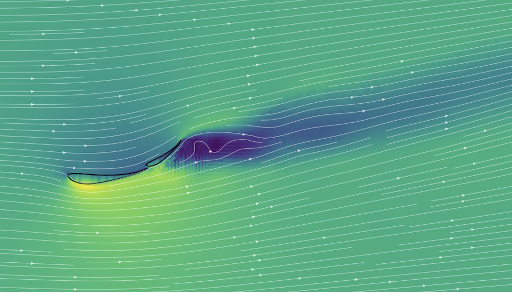

Aug 2026 to May 2030
Ithaca, NY
Ithaca, NY
B.S. in Mechanical Engineering, Cornell University
Cornell David A. Duffield College of Engineering. Currently learning Python (CS1112).
Mechanical engineering student at Cornell. I use CFD, simple experiments and code to test aerodynamic ideas.
See my projects Get in touch
I'm Enzo, a Mechanical Engineering student at Cornell University (Class of 2030). I grew up in Barcelona and finished the International Baccalaureate there before moving to Ithaca, New York.
Formula 1 is how I got into engineering. My projects look at aerodynamics from three angles: a hands-on wind-tunnel experiment, CFD simulations of whole cars, and a rear wing I designed and tested from scratch.
I also build software. As an intern I helped develop an AI-powered tool that analyses financial models in Excel.
Currently, I'm learning Python and SolidWorks to be able to make my own personalized simulations with better models.
I designed an F1-style rear wing ("Rear Wing 1.1") in Onshape and tested it against five industry-validated configurations with CFD. Then I copied a lap-time simulator to turn downforce and drag into seconds on five real circuits
Main finding: No single rear wing is best everywhere. A "Selig S1223" airfoil wing cut drag by up to 45% and reached a downforce-to-drag ratio (L/D) of 3.20. Lowering the original flap 15° cut drag by 15% while losing only 4.5% of the downforce.
| Circuit type | Examples | Best wing | Time Gained from Reference Lap |
|---|---|---|---|
| Low downforce, Long straights | Monza & Spa | S1223 v1 | −0.64 s at Monza, −0.55 s at Spa |
| Medium downforce | Silverstone & Barcelona | Flap −15° | −0.18 s at Silverstone, −0.06 s at Barcelona |
| High downforce | Hungaroring | Flap −15° or My design | Tie (0.001 s apart); flap −15° has 15% less drag |
| Maximum downforce | Monaco (not simulated) | My design | Most downforce of all (2,570 N); inferred from the trend, not simulated |
My design was purposely made at a high angle, in order to test how rear wings that easily let flow detach work in high downforce tracks, even though the experiment has many limitations, the results indicate in favour of my design, at least regarding raw downforce and drag values.
Limitations: the wing was simulated in free air (no car body, wheels or ground), the solver is steady RANS, and the lap-time model is a point mass with approximate F1 parameters. The results rank the wings fairly against each other but are not exact predictions for a real car. Next steps are to sweep the S1223 flap between 30° and 40° and add a simplified car body.
The 2026 regulations aim to allow closer racing. I used CFD to test whether the new car leaves a less energetic wake, and proposed a simple "Wake Rating" (drag coefficient × cross-section area × peak pressure on the rear wing) to compare cars.
The reference car was not simulated: its area is estimated by scaling the 2026 area to the 2022 width limit, and its drag coefficient is an assumed value. The Wake Rating is a comparison tool rather than an absolute physical quantity, so the 36% figure is an estimate.
Read the paper (PDF)I built a homemade wind tunnel and used a LEGO 2024 McLaren with an adjustable front wing to measure how the wing angle changes the product of drag coefficient and cross-section area.
Cornell David A. Duffield College of Engineering. Currently learning Python (CS1112).
Frederic Mistral – Tècnic Eulàlia. Physics HL, Math AA HL and Business Management SL.
Six-week entrepreneurship and emerging technology program with more than 50 international students.
Teaching Catalan and maths to three primary school pupils, with lesson plans I design for each of them.
I'd love to talk about aerodynamics, internship opportunities, motorsport projects and project teams.